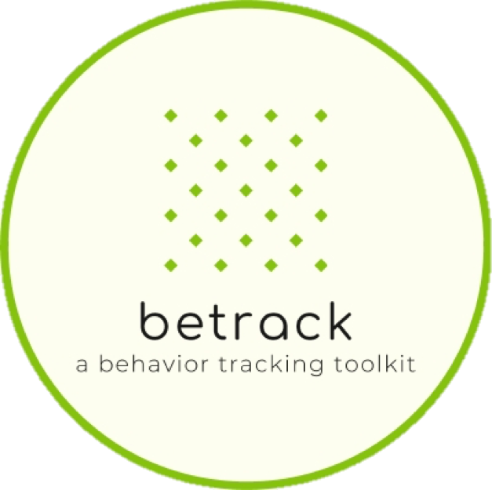

Navigation
index
modules
|
betrack 0.1.0 documentation
»
Index
_
|
A
|
B
|
C
|
D
|
E
|
F
|
I
|
J
|
L
|
M
|
O
|
P
|
R
|
S
|
T
|
V
|
W
_
__init__() (betrack.commands.annotatevideo.AnnotateVideo method)
(betrack.commands.command.BetrackCommand method)
(betrack.commands.trackparticles.TrackParticles method)
(betrack.utils.job.Job method)
A
AnnotateVideo (class in betrack.commands.annotatevideo)
annotator() (betrack.commands.annotatevideo.AnnotateVideo method)
as_gray() (in module betrack.utils.frames)
,
[1]
B
betrack.cli (module)
betrack.commands.annotatevideo (module)
betrack.commands.command (module)
betrack.commands.trackparticles (module)
betrack.utils.frames (module)
betrack.utils.job (module)
betrack.utils.message (module)
betrack.utils.parser (module)
BetrackCommand (class in betrack.commands.command)
C
configure_annotator() (betrack.commands.annotatevideo.AnnotateVideo method)
configure_jobs() (in module betrack.utils.job)
configure_tracker() (betrack.commands.trackparticles.TrackParticles method)
crop() (in module betrack.utils.frames)
,
[1]
D
draw_frame_number() (betrack.commands.annotatevideo.AnnotateVideo method)
draw_particles() (betrack.commands.annotatevideo.AnnotateVideo method)
draw_region() (betrack.commands.annotatevideo.AnnotateVideo method)
E
eprint() (in module betrack.utils.message)
export_trajectories() (betrack.utils.job.Job method)
export_video() (betrack.commands.trackparticles.TrackParticles method)
F
filter_trajectories() (betrack.commands.trackparticles.TrackParticles method)
flip() (in module betrack.utils.frames)
,
[1]
I
invert_colors() (in module betrack.utils.frames)
,
[1]
J
Job (class in betrack.utils.job)
L
link_trajectories() (betrack.commands.trackparticles.TrackParticles method)
load_frames() (betrack.utils.job.Job method)
locate_features() (betrack.commands.trackparticles.TrackParticles method)
M
Message (class in betrack.utils.message)
mprint() (in module betrack.utils.message)
O
open_configuration() (in module betrack.utils.parser)
P
parse_bool() (in module betrack.utils.parser)
parse_directory() (in module betrack.utils.parser)
parse_file() (in module betrack.utils.parser)
parse_float() (in module betrack.utils.parser)
parse_int() (in module betrack.utils.parser)
parse_int_or_float() (in module betrack.utils.parser)
parse_str() (in module betrack.utils.parser)
preprocess_video() (betrack.utils.job.Job method)
R
release_memory() (betrack.utils.job.Job method)
reverse_colors() (in module betrack.utils.frames)
,
[1]
run() (betrack.commands.annotatevideo.AnnotateVideo method)
(betrack.commands.command.BetrackCommand method)
(betrack.commands.trackparticles.TrackParticles method)
S
str() (betrack.utils.job.Job method)
T
TrackParticles (class in betrack.commands.trackparticles)
V
valid_margins() (betrack.utils.job.Job method)
W
wprint() (in module betrack.utils.message)

Quick search
Navigation
index
modules
|
betrack 0.1.0 documentation
»